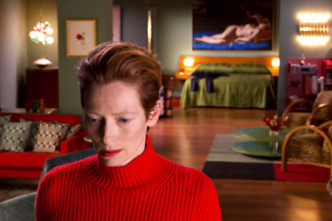
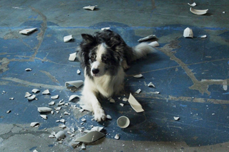
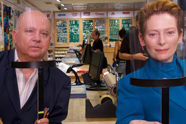
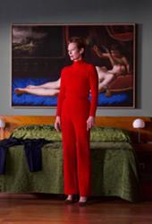
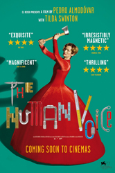
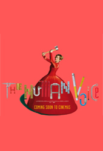
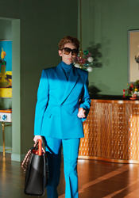

Tilda Swinton - Woman
Dash - The Dog

PLUS

Agustín Almodóvar
PLOT
Based on Jean Cocteau's play La voix humaine, a woman watches time passing next to the suitcases of her ex-lover (who is supposed to come pick them up, but never arrives) and a restless dog who doesn't understand that his master has abandoned him. Two living beings facing abandonment ...




FILM REFERENCES:
WRITTEN ON THE WIND
-
Douglas Sirk (1956) - Tilda Swinton has a DVD in her flat.
ALL THAT HEAVEN ALLOWS
-
Douglas Sirk (1955) - Tilda Swinton has a DVD in her flat.